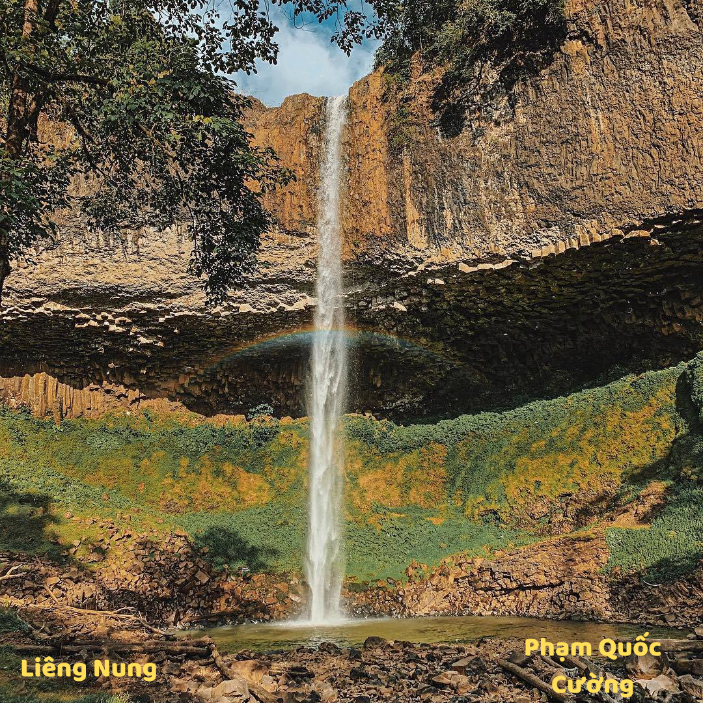
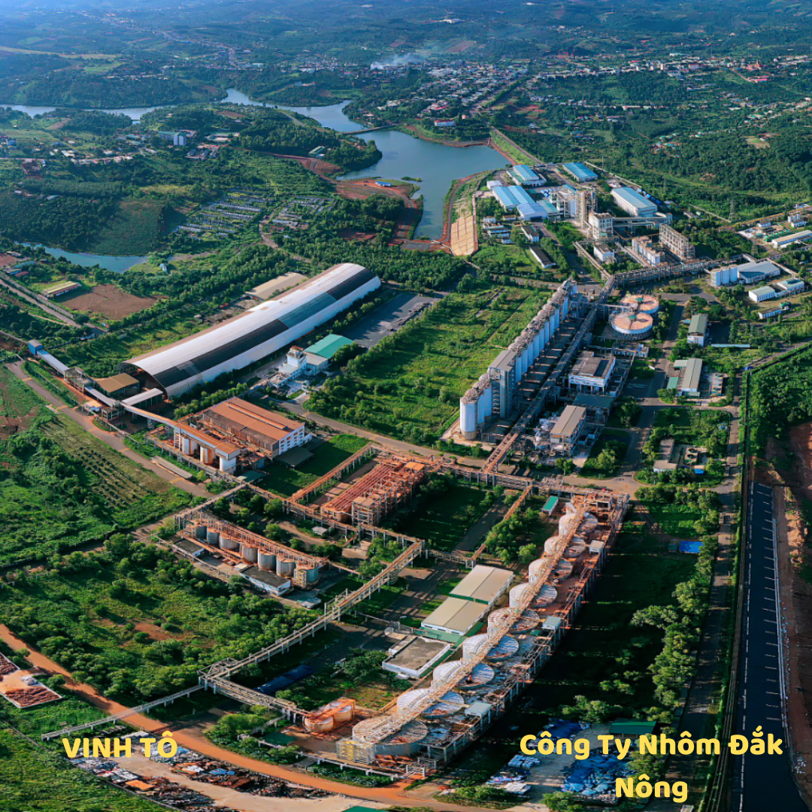
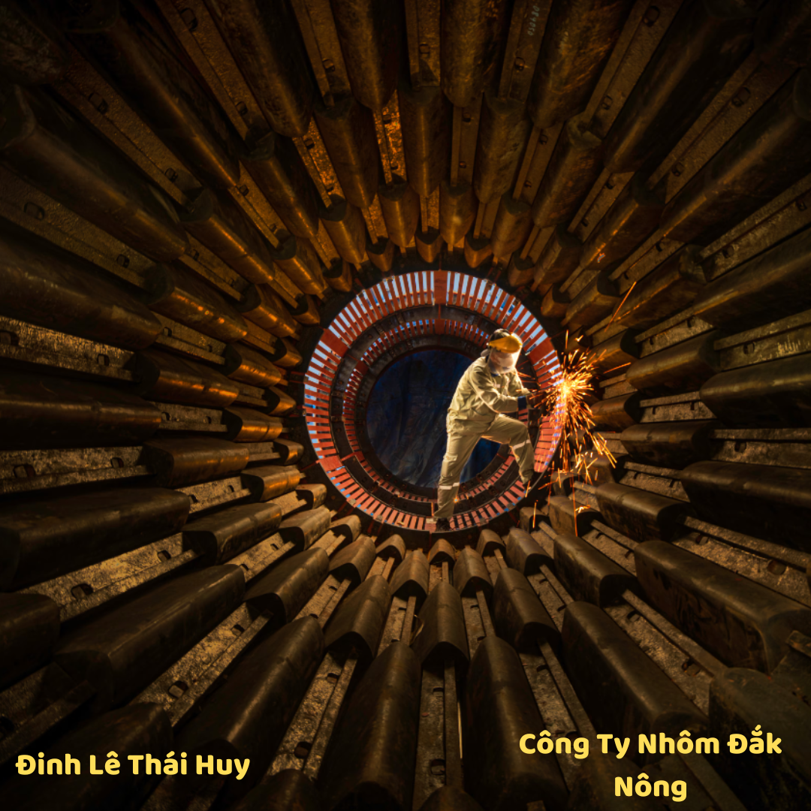
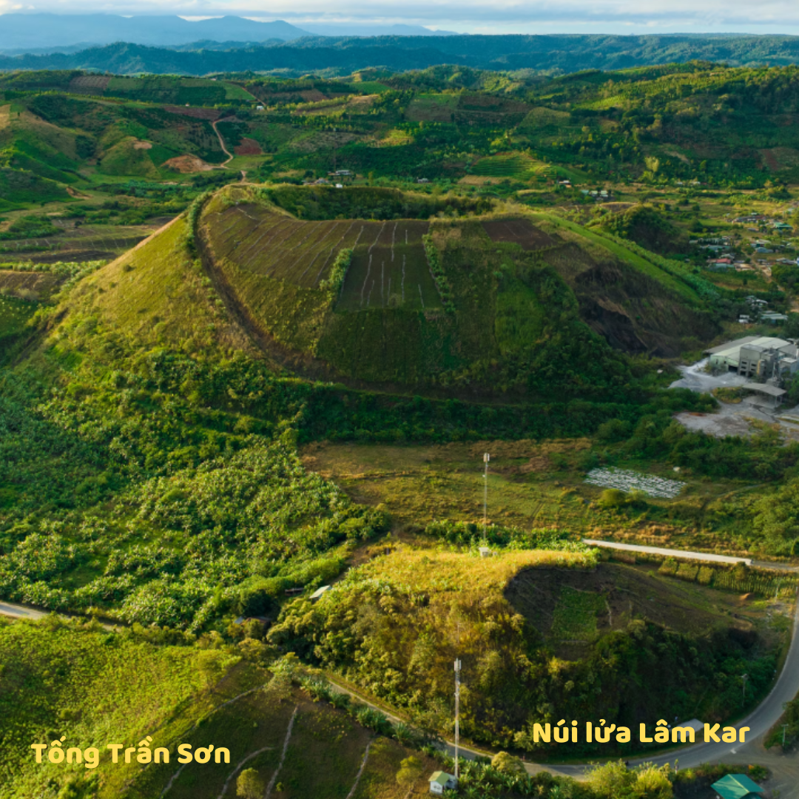
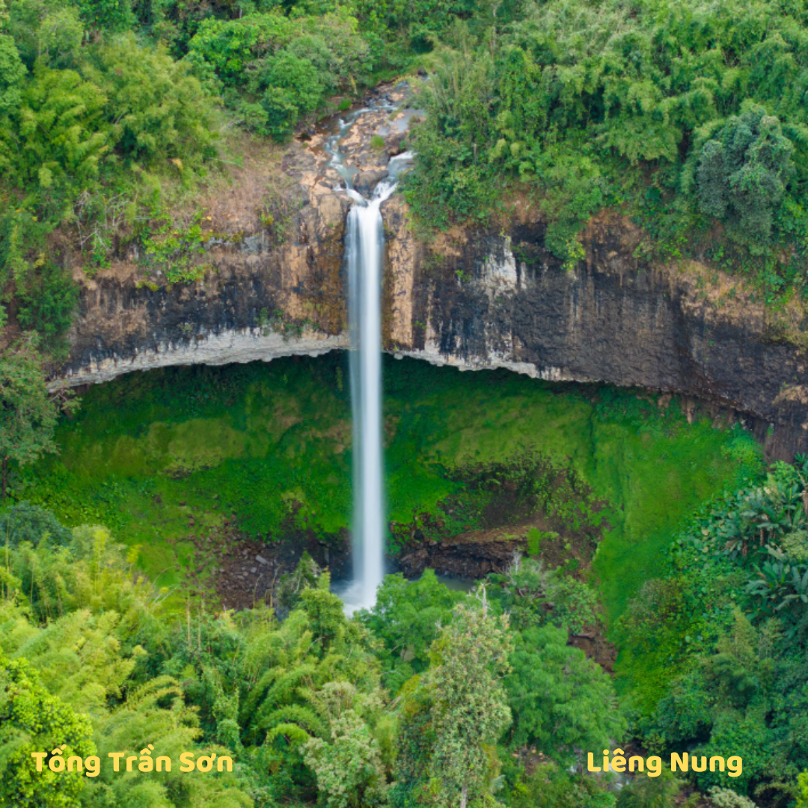
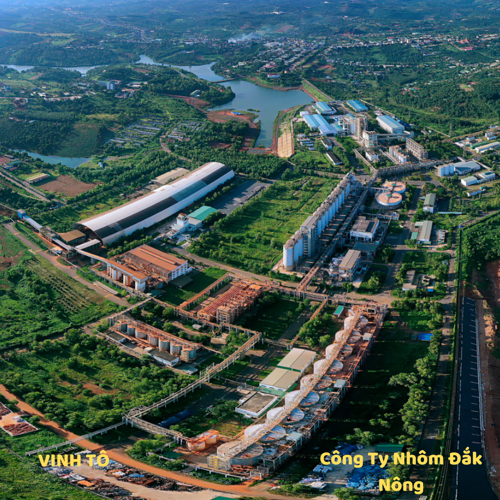
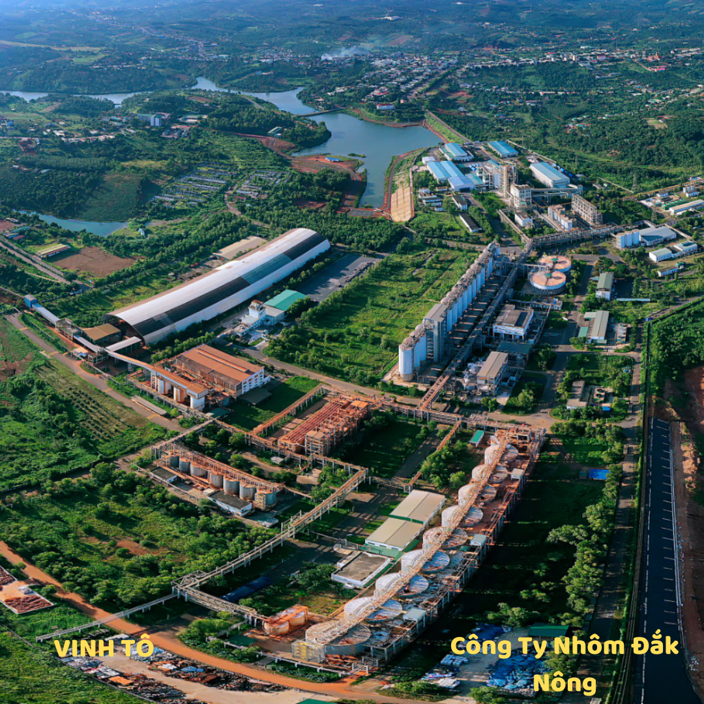
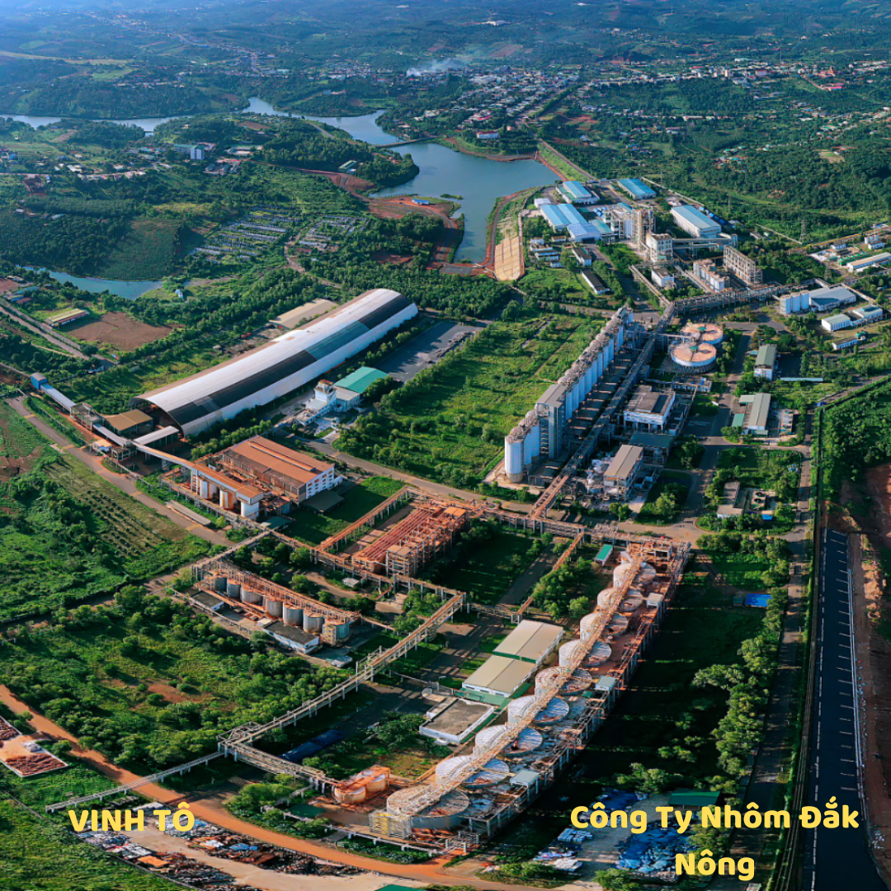
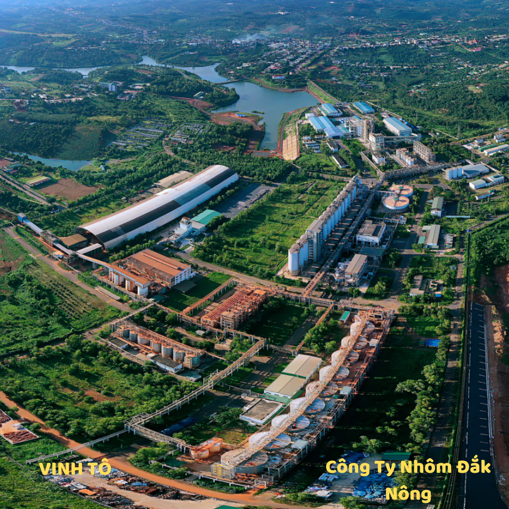

LỊCH
SỬ
VĂN
HÓA
DU
LỊCH
1893
Triều đình nhà Nguyễn chấp nhận để thực dân Pháp cai trị tỉnh Đắk Nông
1945 – 1954
Đắk Nông là vùng tạm chiếm đóng
1959
Chính quyền Sài Gòn cắt một phần phía Tây của tỉnh Đắk Lắk, một phần quận Kiến Hòa của Thủ Dầu Một để thành lập tỉnh Quảng Đức.
11/1975
Tỉnh Quảng Đức sáp nhập vào tỉnh Đăk Lăk.
01/01/2004
Đắk Nông được tái lập
Diễn tấu đạo cụ dân tộc
Nghệ thuật trình diễn Nau M'pring
Lễ hội văn hóa thổ cẩm
Điệu múa dân tộc
Cồng chiêng


  
 


